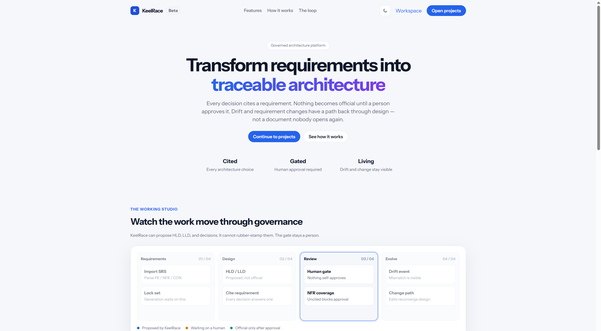
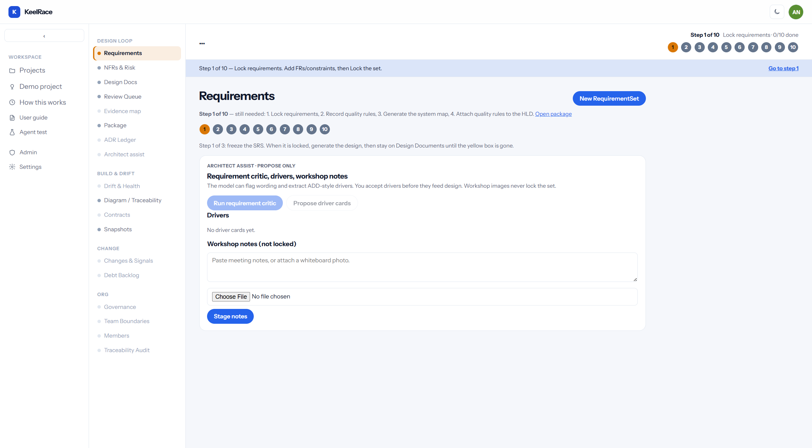
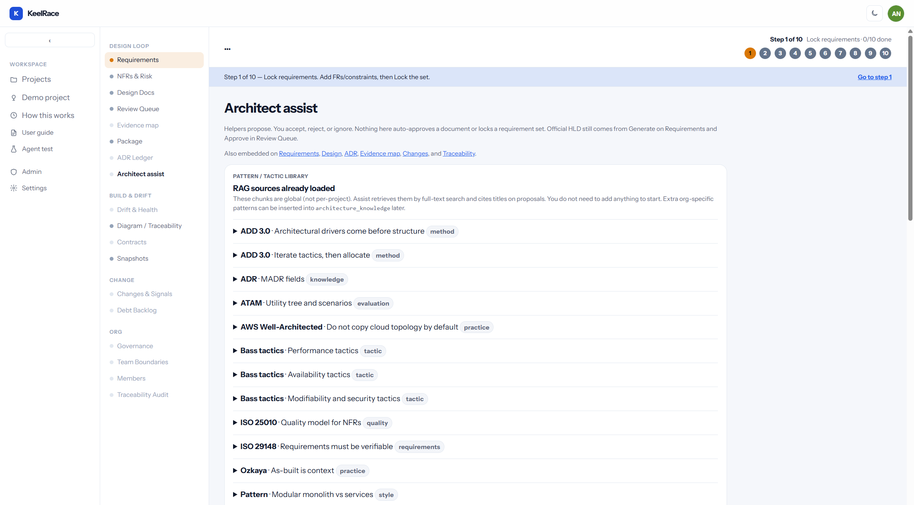
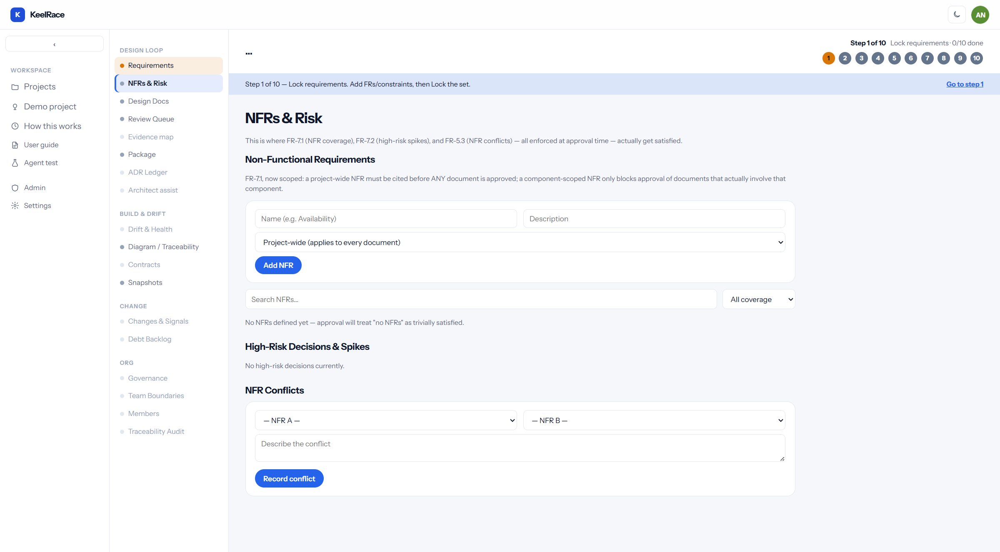
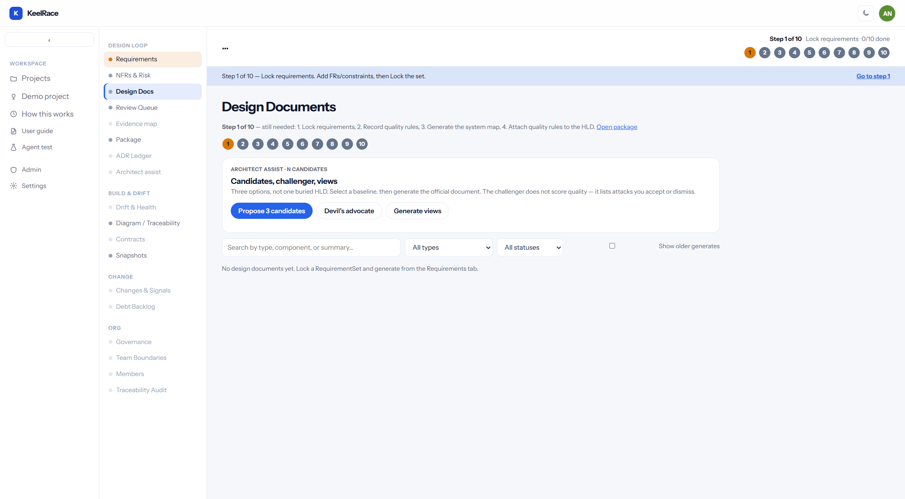
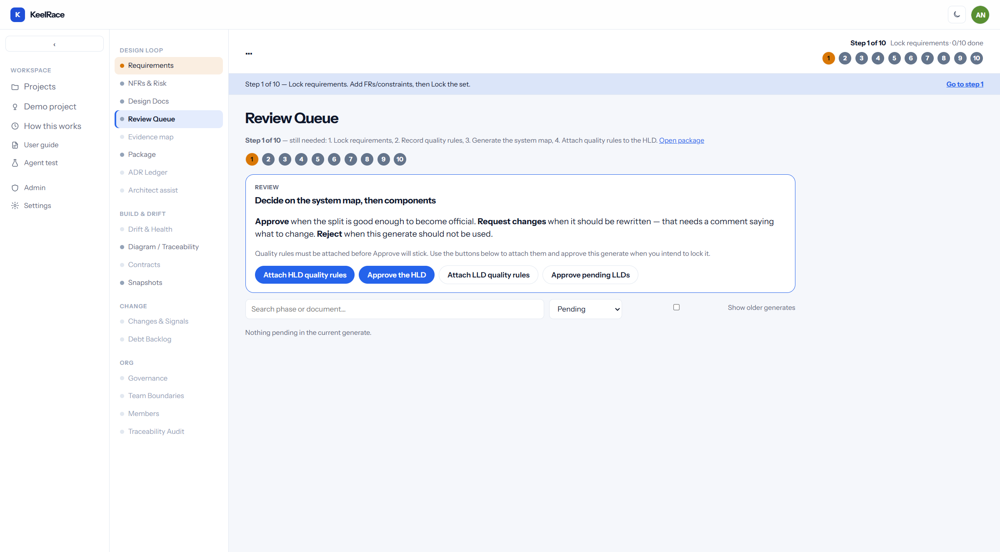

A click-by-click guide for architects. The first pass is seven pages, each finished before you leave it. Models may propose. You lock, cite, and approve. A confirmed decision becomes a standing rule the next change is checked against.
User guide · KeelRace workspace · Open from the sidebar as “User guide”
LampCheck (Demo project) and How this works are a filled example. Do not treat them as your architecture. Agent test is for a live project you own, not the demo.
The seven pages
Page
On this page
Leave when
1
Requirements
Lock the set, then generate the system map.
The map exists.
2
NFRs & Risk
Record the quality rules.
At least one rule is saved.
3
Design Docs
Attach those rules to the map.
Review is the next page.
4
Review Queue
Approve the map, then the component designs.
Both are approved.
5
Diagram / Traceability
Prototype, skeleton, then download the zip.
The files are listed.
6
Snapshots
Capture the structure you have now.
A snapshot exists.
7
Package
Read the rules in force, the retired rules, and the settled questions. Export.
You have the file.
1. Sign in and create a project
Open KeelRace. If you are not signed in, click Workspace or go to /login.
Enter your email and password. Click Sign in. First visit: Need an account? Sign up, confirm email, then sign in.
You land on Projects. Click the blue New project button (top right).
In the dialog, type a name (your product, not “test”). Click Create.
The new row is clickable. Click the name. You are now in that project’s workspace.

12
1Continue to projects — workspace if you already have an account.
2Open projects / Workspace — same destination from the top bar.

123
1Left rail: Projects, Demo project, How this works, User guide (this PDF).
2In order — seven pages, once each: Requirements, NFRs & Risk, Design Docs, Review Queue, Diagram / Traceability, Snapshots, Package.
3New RequirementSet — first click inside a new project.
2. Create a RequirementSet
On Requirements, click New RequirementSet.
A version chip appears, e.g. v1 draft. That is the working SRS. You can have several versions later; generation always uses a locked set.
Until it is locked you will see two ways to fill it: Import from a document and Add one requirement manually. You do not have to use both.
The critic buttons stay disabled until a set exists. Create the set first, then run assist.
3. Enter requirements
Pick path A (import) or path B (type them). Mixing is allowed: import the bulk, then add the gaps by hand.
Path A — Import from a document
Stay on Requirements with a draft set selected (not locked).
Find the card Import from a document.
Leave Upload .docx/.pdf selected, or click Paste text if you already copied the SRS.
Upload: click the file control, choose a .docx or .pdf. Paste: put the raw text in the box.
Click Extract & parse. Wait. You get a review list, nothing is saved yet.
For each row: keep or clear the checkbox; edit Ref code (FR-1, CON-1, NFR-A); set type FR / NFR / CON; fix title and body.
Click Import N selected. FR and CON become requirements on this set. NFRs go to the NFRs & Risk tab, not the FR list.
What that card looks like
Import from a document — already have an SRS? Bring it in instead of retyping.
Upload .docx/.pdfPaste text
Choose File — no file chosen
Extract & parse
After extract you will see checkboxes, ref codes, type dropdowns, titles, bodies, then Import N selected.
Path B — Add one by one
On the same draft set, scroll to Add one requirement manually.
In Ref code type FR-1 (or CON-1, NFR-1). Keep the prefix consistent; the UI filters by FR / NFR / CON from this code.
In Title type a short name, e.g. Turn the lamp on and off.
In Body type the shall-statement. One demand per row. If you need “and also”, add a second requirement.
Click Add. The card appears in the list below.
Repeat for each FR, CON, and any NFR you want as a requirement row. Extra quality rules can wait for NFRs & Risk.
Pencil edits the row. Trash deletes it — only while the set is draft.
Add one requirement manually
Ref code e.g. FR-1.1
Title
Body — the verifiable shall
Add
After Lock, those fields disappear. You cannot silently edit a frozen SRS. Use Changes & Signals.
4. Critic and drivers (still draft or after lock)
You can run these as soon as the set has rows. They write proposals only.
On Requirements, in Architect assist · propose only, click Run requirement critic.
Read each finding. Keep if you agree. Dismiss if the model is wrong (compound CON that is really one constraint).
If the set is still draft and there is a rewrite: Apply rewrite to draft updates that requirement’s body. You still own the wording.
Click Propose driver cards. Each card is stimulus / environment / response.
Click Accept driver for the ones that will shape the split. Reject scale-out or cloud if the SRS never asked.
Optional: paste workshop notes or attach a whiteboard photo, then Stage notes. Staging does not lock.

123
1User guide — this PDF, always a new tab.
2Architect assist — same helpers as on Requirements, plus candidates, Ask, ATAM, mappings.
3RAG sources already loaded — expand a title to read the chunk. You do not upload a corpus to start.
5. Lock, then generate — still on Requirements
On the RequirementSet card, click Lock. The badge becomes locked. Generation is rejected until this succeeds.
On that same card, click Generate HLD/LLD. Wait until the system map exists. Leave Requirements only after that.
Critic findings and driver cards are proposals. Accept the drivers that match the SRS. Reject a split the requirements never asked for. They do not approve the map.
This page is one visit: lock, then generate. The next page is NFRs & Risk.
6. Quality rules
Open NFRs & Risk.
Name: e.g. Local secret storage. Description: what must stay true. Scope: usually Project-wide.
Click Add NFR. Repeat for each quality rule.
If import already created NFR rows, use those. Do not add a second copy.

123
1Open NFRs & Risk.
2Fill Name and Description.
3Click Add NFR. Uncited NFRs block Approve later unless you override in the open.
7. Design Docs — attach the rules, once
Open Design Docs. Read the system map.
Optional: Propose 3 candidates, select one baseline, discard the others, then run devil’s advocate. A selected candidate is not an approved map. There is no quality score.
If a yellow box lists uncited quality rules, attach them to a decision, or record an override in the open.
Leave for Review Queue. Prototype and Skeleton are not on this page.

123
1Design Docs.
2Propose 3 candidates — before you treat one HLD as inevitable.
3Devil's advocate — after a baseline exists (selected candidate or generated HLD).
Generation uses accepted drivers and the selected candidate when those exist. It still does not approve the document.
8. Review — approve the map, then the components
Open Review Queue. Stay here until both approvals are done.
Read the system map. Approve when the split is good enough to be official. Request changes needs a comment. Reject when this generate should not be used.
If Approve fails, read the message: uncited quality rule, missing spike, unconfirmed reconciliation, or an option that breaks a standing rule.
A break stops approval until you rewrite the option, or you record a different decision that replaces the rule and you write why. The old rule stays in the ledger as replaced.
Approve the component designs on this same page. A model cannot set the status.

123
1Review Queue — the only door to official.
2Attach HLD quality rules if citations are missing.
3Approve the HLD — a person, not the model.
9. Diagram — prototype, skeleton, zip
Open Diagram / Traceability. This is the only place Prototype and Skeleton are created.
Click Prototype. You get a flow of the approved map.
Click Skeleton. Stub files appear under each component, linked by component id. The filename is not the identity.
Click Download zip on the generation row.
10. Snapshot, then the package
Open Snapshots. Capture the structure you have now.
Open Package. Read the preview, then export.
The first section is what you are accountable for: each rule still in force, and each rule that was retired, with the reason.
Settled questions list the answer that won and the answers that were turned down. Language, database product, and hosting are decisions only if they appear there.
The package is the brief you would defend in a review, and the list a later change is checked against. It is not a second copy of the screens you already clicked.
What you click after approval
Screen
What you click
What it is for
Diagram / Traceability
Prototype, then Skeleton, then Download zip
The flow, the stub files, and a folder you can keep. Files link by component id.
Snapshots
Capture
Freeze this structure so a later change can be compared.
Package
Read the preview, then export
Rules still in force, rules retired and why, then the settled questions.
ADR Ledger
Type the chosen option, confirm the sentence, the ending, and what it covers
A standing rule. The copilot does not choose the winner.
11. Library — open it when the question shows up
Library is not another pass through the seven pages. Each item answers one later question.
Open
When
ADR Ledger
You confirm a standing rule: one sentence, the only ending it allows, and what it covers. The copilot may list alternatives. You type the chosen option.
Evidence map
Someone asks why a component exists. The answer is requirement, then decision, then file.
Drift & Health
A file changed. It still holds a rule, or the change is architectural drift.
Changes & Signals
The locked set must grow. Door 1 is a requested add, modify, or remove. Door 2 is something found later. Apply creates a new requirement-set version.
An API shape, work you are leaving on purpose, where it runs, who owns a component, who may approve, or a check that the links still point at each other.
When the SRS must change
Open Changes & Signals.
Door 1: fill Description. Action add / modify / remove. For modify/remove pick the target requirement. Proposed text if you have it. Submit.
Door 2: click Door 2: Signals, describe what you found, Submit, then classify (defect vs requirement gap).
Optional: Write blast brief — a narrative, not triage.
Scope → reconverge → apply. That creates a new requirement-set version. You do not unlock and overwrite.